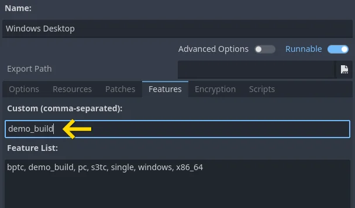
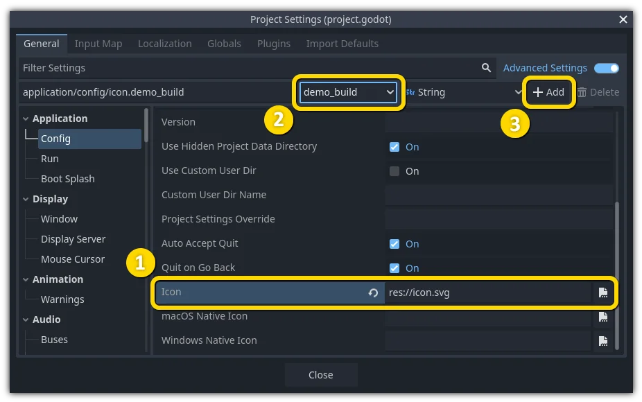

Feature tags
Introduction
Godot has a special system to tag availability of features. Each feature is represented as a string, which can refer to many of the following:
Platform name.
Platform architecture (64-bit or 32-bit, x86 or ARM).
Platform type (desktop, mobile, Web).
Supported texture compression algorithms on the platform.
Whether a build is
debugorrelease(debugincludes the editor).Whether the project is running from the editor or a "standalone" binary.
Many more things.
Features can be queried at runtime from the singleton API by calling:
OS.has_feature(name)
OS.HasFeature(name);
OS feature tags are used by GDExtension to determine which libraries to load.
For example, a library for linux.debug.editor.x86_64 will be
loaded only on a debug editor build for Linux x86_64.
Default features
Here is a list of most feature tags in Godot. Keep in mind they are case-sensitive:
Feature tag |
Description |
|---|---|
android |
Running on Android (but not within a Web browser) |
bsd |
Running on *BSD (but not within a Web browser) |
linux |
Running on Linux (but not within a Web browser) |
macos |
Running on macOS (but not within a Web browser) |
ios |
Running on iOS (but not within a Web browser) |
visionos |
Running on visionOS (but not within a Web browser) |
windows |
Running on Windows |
linuxbsd |
Running on Linux or *BSD |
debug |
Running on a debug build (including the editor) |
release |
Running on a release build |
editor |
Running on an editor build |
editor_hint |
Running on an editor build, and inside the editor |
editor_runtime |
Running on an editor build, and running the project |
template |
Running on a non-editor (export template) build |
double |
Running on a double-precision build |
single |
Running on a single-precision build |
64 |
Running on a 64-bit build (any architecture) |
32 |
Running on a 32-bit build (any architecture) |
x86_64 |
Running on a 64-bit x86 build |
x86_32 |
Running on a 32-bit x86 build |
x86 |
Running on an x86 build (any bitness) |
arm64 |
Running on a 64-bit ARM build |
arm32 |
Running on a 32-bit ARM build |
arm |
Running on an ARM build (any bitness) |
rv64 |
Running on a 64-bit RISC-V build |
riscv |
Running on a RISC-V build (any bitness) |
ppc64 |
Running on a 64-bit PowerPC build |
ppc32 |
Running on a 32-bit PowerPC build |
ppc |
Running on a PowerPC build (any bitness) |
wasm64 |
Running on a 64-bit WebAssembly build (not yet possible) |
wasm32 |
Running on a 32-bit WebAssembly build |
wasm |
Running on a WebAssembly build (any bitness) |
mobile |
Host OS is a mobile platform |
pc |
Host OS is a PC platform (desktop/laptop) |
web |
Host OS is a Web browser |
nothreads |
Running without threading support |
threads |
Running with threading support |
web_android |
Host OS is a Web browser running on Android |
web_ios |
Host OS is a Web browser running on iOS |
web_linuxbsd |
Host OS is a Web browser running on Linux or *BSD |
web_macos |
Host OS is a Web browser running on macOS |
web_windows |
Host OS is a Web browser running on Windows |
etc |
Textures using ETC1 compression are supported |
etc2 |
Textures using ETC2 compression are supported |
s3tc |
Textures using S3TC (DXT/BC) compression are supported |
movie |
Movie Maker mode is active |
shader_baker |
Project was exported with shader baking enabled (only applies to the exported project, not when running in the editor) |
dedicated_server |
Project was exported as a dedicated server (only applies to the exported project, not when running in the editor) |
Warning
With the exception of texture compression, web_<platform> and
movie feature tags, default feature tags are immutable.
This means that they will not change depending on runtime conditions.
For example, OS.has_feature("mobile") will return false
when running a project exported to Web on a mobile device.
To check whether a project exported to Web is running on a mobile device,
use OS.has_feature("web_android") or OS.has_feature("web_ios").
Custom features
It is possible to add custom features to a build; use the relevant field in the export preset used to generate it:

Note
Custom feature tags are only used when running the exported project (including with One-click deploy). They are not used when running the project from the editor, even if the export preset marked as Runnable for your current platform has custom feature tags defined.
Custom feature tags are also not used in EditorExportPlugin scripts. Instead, feature tags in EditorExportPlugin will reflect the device the editor is currently running on.
Overriding project settings
Features can be used to override specific configuration values in the Project Settings. This allows you to better customize any configuration when doing a build.
In the following example, a different icon is added for the demo build of the game (which was customized in a special export preset, which, in turn, includes only demo levels).

The desired configuration is selected, which effectively copies its properties to the panel above (1). The "demo_build" feature tag is selected (2). The configuration is added to the project settings (3).
After overriding, a new field is added for this specific configuration.

Note
When using the project settings "override.cfg" functionality (which is unrelated to feature tags), remember that feature tags still apply. Therefore, make sure to also override the setting with the desired feature tag(s) if you want them to override base project settings on all platforms and configurations.
Default overrides
There are already a lot of settings that come with overrides by default; they can be found in many sections of the project settings.

Customizing the build
Feature tags can be used to customize a build process too, by writing a custom ExportPlugin. They are also used to specify which shared library is loaded and exported in GDExtension.